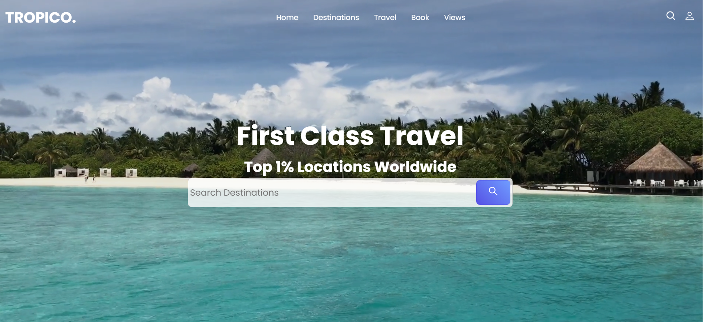
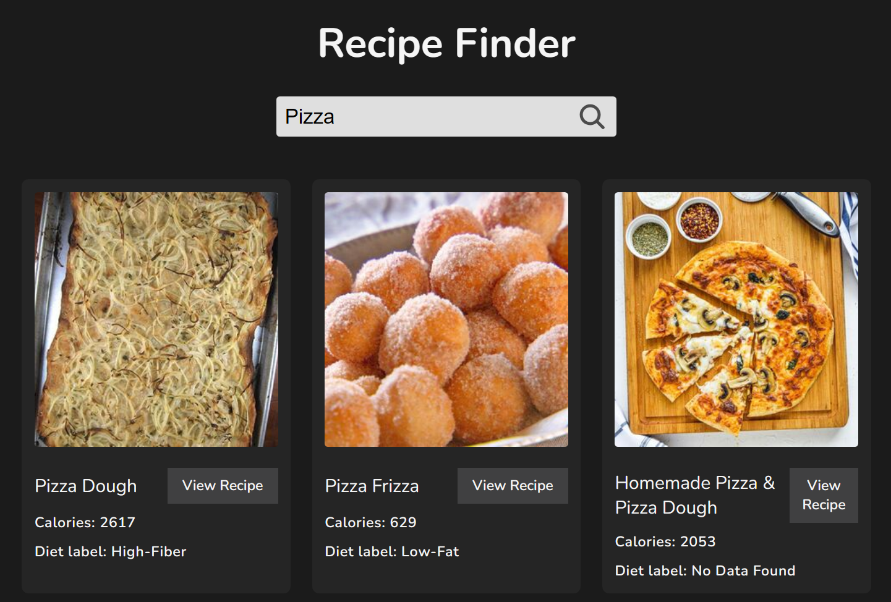
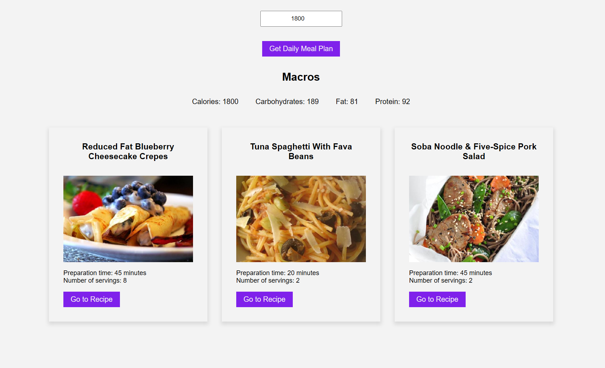
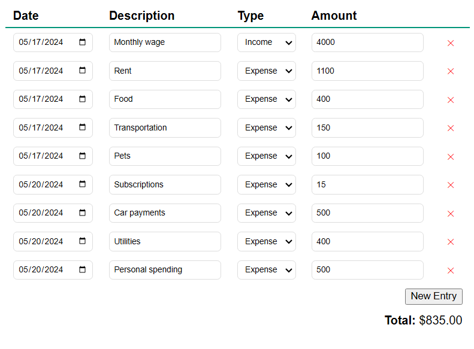
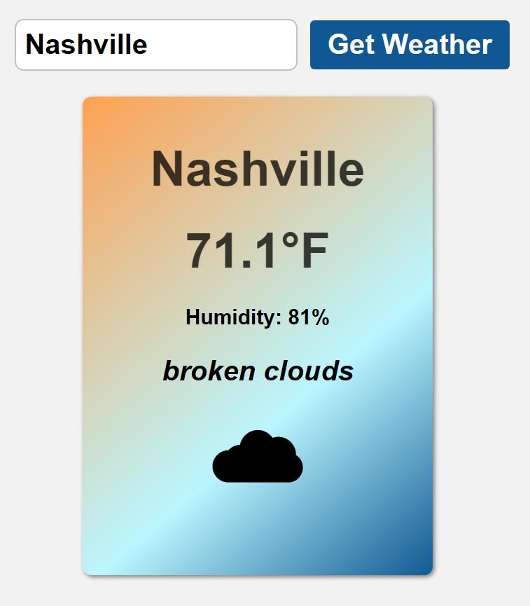
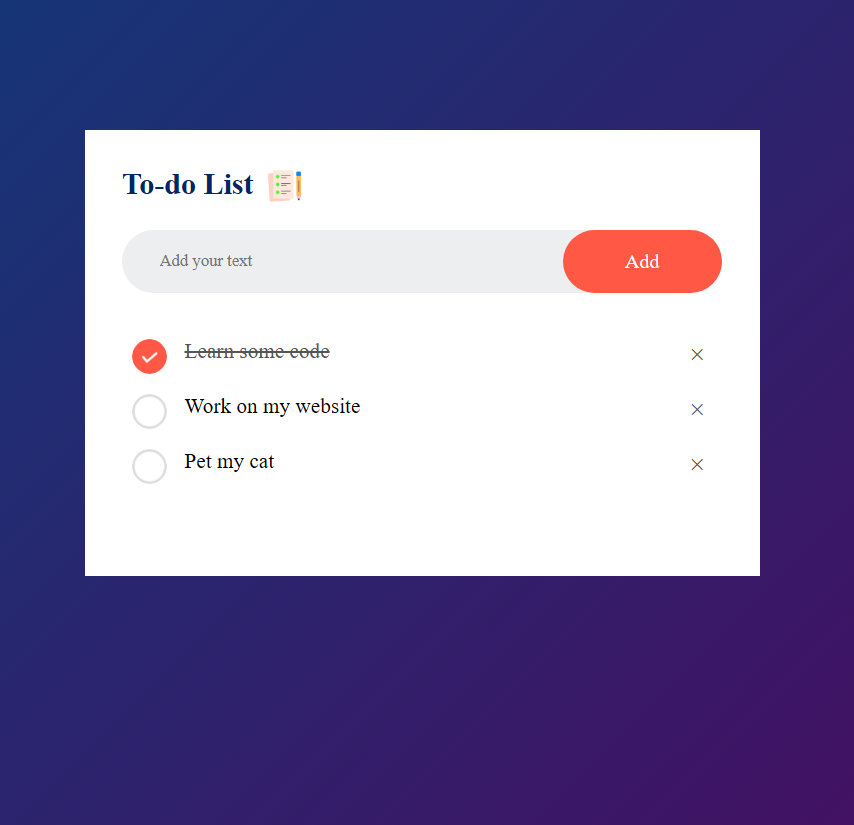

Professional Summary
HI, my name is Morgan and I am a front end developer. My professional goal as a front end
developer is to continuously enhance my skills in front facing design while also providing
the best possible user experience for the end user. I aim to contribute to projects that
challenge me to grow and evolve. You can find some of my projects down below that showcase a
few of
my technical skills.

Tropico is a travel website designed to provide users with detailed information about
various exotic
travel destinations. It features a user-friendly interface that helps users explore, plan, and organize
their travel
experiences.
Technologies Used
- Frontend: HTML, CSS, React.js
- Reusable Components: Imported reusable components into each part of the project for consistency and
efficiency

The Recipe Finder website is a platform designed to help users discover and explore a wide range of
recipes. It offers a user-friendly interface with features that facilitate recipe search, browsing, and
organization.
Technologies Used
- Frontend: HTML, CSS, JavaScript
- API Integration: Integration with the Edamam API for accessing recipe data

The Meal Planning App is a comprehensive platform crafted to assist users in efficiently planning and
organizing their
meals. It provides an intuitive interface packed with functionalities that simplify meal planning,
recipe discovery, and
meal organization
Technologies Used
- Frontend: HTML, CSS, React.js
- API Integration: Integration with the Spoonacular API for accessing a vast database of recipes,
nutritional information,
and ingredient data.

The Budget Tracker is a web-based application designed to help users manage their finances effectively.
It offers tools and features that enable users to track income, expenses, and savings, providing a
comprehensive view of their financial health.
Technologies Used
- Frontend: HTML, CSS, JavaScript
- Responsive Design: Implemented responsive design techniques using media queries.

The Weather App is a web-based application designed to provide users with up-to-date weather information
for specified locations. It offers a range of features to help users plan their activities based on
current and forecasted weather conditions.
Technologies Used
- Frontend: HTML, CSS, JavaScript
- API integration: OpenWeather API used to provide responsive results from user queries

This Todo App is a task management application designed to help users organize their daily tasks, set
priorities, and
track progress. It offers a simple and intuitive interface with essential features for efficient task
management.
Technologies Used
- Frontend: HTML, CSS, JavaScript
- Storage: Local storage saved on the client's side